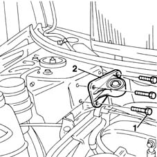

1008C16 body link bracket - r r
- Path
- Procedures > 10 ENGINE UNIT > 1008 POWER UNIT SUPPORTS > 1008C power unit reaction elements > 1008C16 body link bracket - r r
- Kind
- repair procedure (removal / refitting; the operation number is the code)
- Applies to
- engines: 1.9 JTD 8V; all production periods
- Interactive page
- https://sloeber94.github.io/elrnDB-fMltpl/en/#/2891352
Applies to: engines: 1.9 JTD 8V; all production periods
 Removing
Removing
 Refitting
RefittingOpen the bonnet lid.
1008C10 power unit upper reaction link r r
1. Unscrew the retaining bolts.
2. Remove the link bracket from the body.

Applies to: engines: 1.9 JTD 8V; all production periods
Refitting
RemovingFit the bracket to its seat on the body.
Screw in the bracket bolts and then tighten to torque.
 | Fastening | Component | Ø | Value (daNm) |
|---|---|---|---|---|
- | Bolt | REACTION LINK ATTACHMENT BRACKET | M10 x 1.25 | 5 |
1008C10 power unit upper reaction link r r
Close the bonnet lid.
Topics linked from this page (1)
Topics that link to this page (7)
- 1060G90 diesel injection wiring harness - r r
- 1280B21 (Pump) - MASTER CYLINER R.R. for right hand drive versions
- 1280B35 FLEXIBLE PIPE between intermediate rigid pipe and (pump) - master cylinder R.R. for right hand drive versions
- 3330C12 (PUMP) - MASTER CYLINDER R.R. for right hand drive versions
- 3330C38 FLEXIBLE PIPE - FRONT section - from brake fluid RESERVOIR to (pump) - MASTER CYLINDER R.R. for right hand drive versions
- 3330D18 brake servo r r for right hand drrive versions
- 4130B35 supply pipe from fluid resevior to power steering pump r r for right hand drive versions